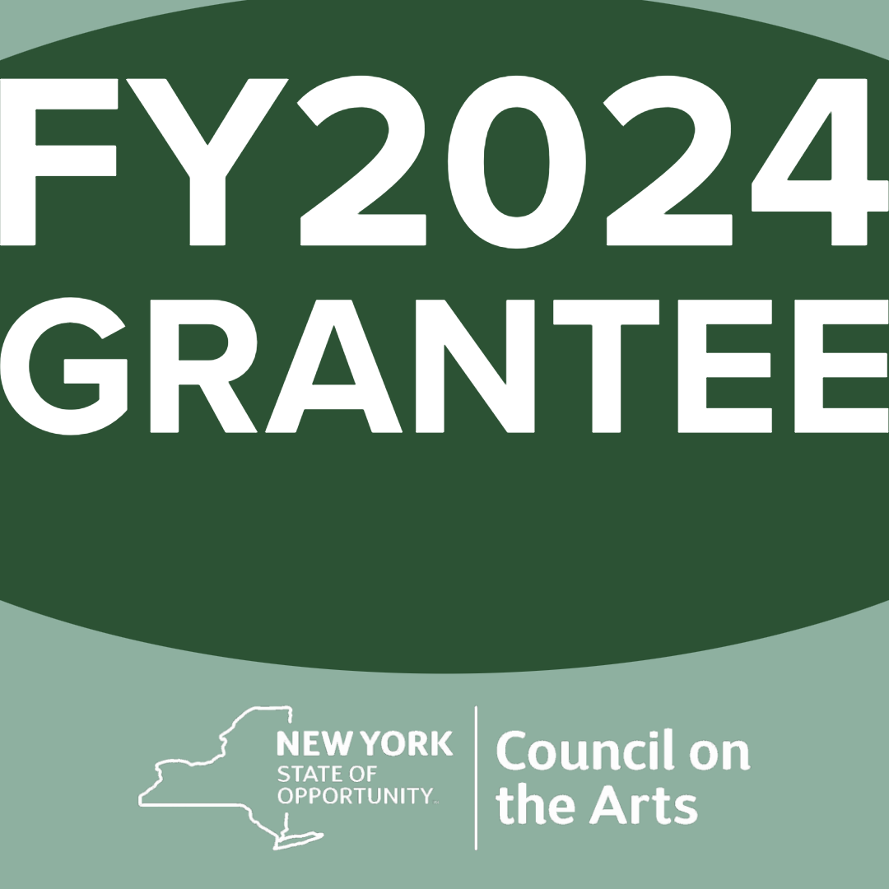

The Heliotechnics/Heliotechniques Institute for the Study of Solar Practices explores new ways of thinking about energetic entities, such as petroleum, whale oil, electricity, and the sun to decenter anthropocentric representations of nature, culture, and technology. The Institute takes a pluralistic approach to meaning making, providing critical and creative inquiries that pose a very basic question: why do Western humans presume that because energetic entities exist, they should be put to work for human economic productive means?
The Heliotechnics/Heliotechniques Institute website is a solar powered website. It exists intermittently, in relation to solar activity at the local server site.
Solar practices explore relations as practices that create alternative conceptualizations of meaning making, knowledge production, media, communication, community, agencies, and beings-together that challenge anthropocentrism. Solar practices does not distinguish between the practices of different entities, and does not assume (Western, English-speaking) human representations are the correct, universal, descriptions of life. Instead, it constructs meaning through relations.
The Heliotechnics/Heliotechniques Institute for the Study of Solar Practices is supported by The New York State Council on the Arts Artist Support Grant, The Buffalo Institute for Contemporary Art Generator Fund, with sponsorship from Wave Farm, and co-sponsorship from Gray Area for the Arts, the Center for Emotional Materiality, and the Department of Media Study University at Buffalo, SUNY.
People:
Dr. Elia Vargas, director
James Pardue, solar server designer
Chris Michael, coordinator
Amber Manto, heliotechnician
Giuliano Gati, heliotechnician
Dr. Abigail Cooke, solar survey co-designer
Dr. Christina Corfield, community support
Sierra Vargas, website designer